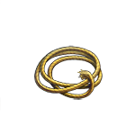

Получено: файл; исходный URL. Изображение подписано на странице-источнике; файл получен с зеркала. Совпадение с оригиналом не проверено. Страница: источник.
Канат
Мой Мир; историческая таблица, дата редакции не установлена- Тип
- нет данных
- Покупка
- 2 Зб; место покупки не указано
- Продажа
- 1000 монет
- Как получить
- Где достать: Собрать Весеннюю коллекцию, В Университете после модернизации
- Применение
- Участвует в строительстве Моста и улучшении зданий
- Особенности
- нет данных
- Версия и дата
- Мой Мир; историческая таблица, дата редакции не установлена


Данные по источнику · Мой Мир · 20.06.2011
Предварительно: один источник; требует сверки. Требуется сверка.
- Покупка
- 2 зомбаксов (по источнику)
- Продажа
- 1 000 монет
- Получение
- Весенняя коллекция; модернизированный университет
- Применение
- Мост и улучшение зданий
Данные по источнику · ВКонтакте, ZOMBIA · 28 Июня 2011, 20:20; дата редакции не установлена
Предварительно: Данные одной исторической фанатской страницы; цифры и подписи изображений требуют сверки. Описание и условия сохранены по колонкам без додумывания.. Требуется сверка.
- Описание материала
- [изображение: Канаты, зомби ферма, зомби мания] Канаты 2000 монет 2 Зомбакс
- Участвует в строительстве
- нет текстовых данных; возможны неподписанные изображения
- Как достать
- Произвести в Модерн. Университете или Выиграть в Рулетку или собрать Весеннюю Коллекцию
- Участвует в создании
- нет текстовых данных; возможны неподписанные изображения
Данные по источнику · браузерная версия; платформа не указана · дата редакции неизвестна
Предварительно: Подписи и последовательность пиктограмм перенесены без автоматического толкования. Названия, цены и направления стрелок требуют визуальной сверки; возможны ошибки самого сайта.. Требуется сверка.
- Колонка 1 в порядке пиктограмм
- [подпись: Канаты; файл kanaty.png] [подпись: Стоимость (Зомбаксов); файл zombucks.png] 2 [подпись: Продажа; файл moneta.png] 2000
- Колонка 2 в порядке пиктограмм
- [значок: proizvoditsya.png] [подпись: Модернизированный Университет; файл universitet-modern.png]
- Колонка 3 в порядке пиктограмм
- [значок: stroit.png] [подпись: Модернизированная Мельница; файл melnica-modern.png] [подпись: Мост; файл most.png]
- Колонка 4 в порядке пиктограмм
- [значок: sosdanie.png]
- Колонка 5 в порядке пиктограмм
- [значок: bonus.png] [подпись: Модернизированный Маяк; файл mayak-modern.png] [значок: poluchit.png] [подпись: Весенняя Коллекция; файл vesennyaya.png]
Текст источника без реконструкции
Где достать: Собрать Весеннюю коллекцию, В Университете после модернизации Участвует в строительстве Моста и улучшении зданий
Связанные сущности
нет проверенных связей — требуется сверка.